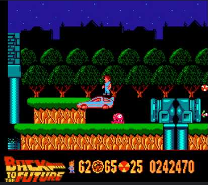
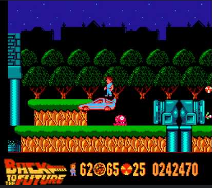

El juego Back to the Future para NES, publicado por LJN en 1989, es una adaptación de la icónica película, pero lamentablemente es recordado como uno de los títulos más decepcionantes de la consola. 🎮 Jugabilidad En lugar de vivir la aventura de Marty McFly viajando en el tiempo, el juego se centra en recorrer calles esquivando obstáculos como abejas y matones, mientras recolectas relojes para evitar que la foto de tu familia desaparezca. Además, hay niveles donde lanzas batidos para derrotar enemigos, lo cual no tiene relación con la película. 🎵 Música y gráficos La música es repetitiva y nunca cambia, lo que puede volverse frustrante. Los gráficos son simples y no capturan la esencia de la película. 🏆 Recepción El juego fue duramente criticado por su pobre diseño y mecánicas confusas. Incluso Bob Gale, guionista de la película, expresó su descontento y recomendó a los fans que no lo compraran.